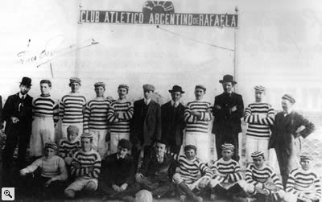

Hace 115 años atrás, más precisamente el 13 de enero de 1907, en una casa ubicada en calle San Martín (donde hoy se encuentra la Mutual de la entidad), un grupo de jóvenes entusiastas fundaba el Club Atlético Argentino de Rafaela, que a partir del 3 de mayo de 1915 pasó a llamarse Club Atlético de Rafaela y finalmente el 1 de abril de 1988 cambió de denominación, definitivamente, a Asociación Mutual Social y Deportiva Atlético de Rafaela.
